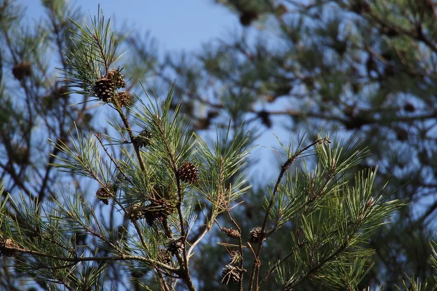

乔木 · 植物界
赤松 Pinus densiflora

松科松属常绿乔木，树皮红褐色、针叶二针一束，原产东亚，是沿海荒山绿化与园林造型的常用树种。
- 分类
- 门裸子植物门纲松柏纲目松柏目科松科属松属
- 栖息环境
- 沿海丘陵与山地，喜光、耐干旱瘠薄，抗海风与盐雾
- 地理分布
- 日本、朝鲜半岛及中国东北、山东、江苏、浙江等地
- 保护级别
- IUCN 暂无评估；野生种群稳定，但受松材线虫病威胁
物种志
赤松为常绿乔木，高可达 30 米，树皮红褐色并呈不规则鳞片状剥落，小枝橙黄色或淡红褐色。针叶二针一束，长 8–12 厘米，较柔软，叶鞘宿存。雄球花淡黄色、聚生，雌球花紫红色，球果卵状圆锥形，长 3–5.5 厘米，成熟时褐色，种鳞张开散出带翅种子。
本种分布于日本、朝鲜半岛以及中国东北、山东、江苏等地，多生于沿海丘陵与山地，喜光、耐干旱瘠薄，抗海风与盐雾，是海岸防护林与荒山造林的优良树种。它树姿优美、枝干苍劲，在日本与中国都被广泛用于盆景与园林造型，著名的“赤松盆景”多取自本种。木材可供建筑与家具，树干可割松脂；松针与松花粉在民间也有利用。赤松林需要注意松材线虫病的威胁。
形态与习性
- 株高可达 30 米，树皮红褐色鳞片状剥落
- 针叶二针一束，长 8–12 厘米，较柔软
- 花期4–5 月，雄球花淡黄色
- 球果成熟翌年 9–10 月，球果褐色
- 光照强阳性，不耐庇荫
- 水分耐旱，抗海风与盐雾
- 主要用途海岸防护林、荒山绿化、盆景与用材
趣味知识
- 赤松因树皮呈红褐色而得名，日本称之为“赤松”，是日本庭园中最具代表性的松树。
- 它耐海风与盐雾，常被种在海岸边形成防护林带。
- 赤松的枝干柔韧、易造型，是制作松树盆景的主要树种之一。
- 松材线虫病对赤松危害极大，受感染的植株往往在数月内枯死。